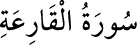

<a name=10836></a><br/>
<b>101- el-KÂRİA SÛRESİ</b><br/>
<i><b>Kâria, kapı çalan demektir ve kıyamet kasdedilmiştir. Kureyş sûresinden sonra</b></i><br/>
<i><b>Mekke’de inmiştir, 10 veya 11 âyettir. Bu sûrede, kıyametin kopuşunda meydana</b></i><br/>
<i><b>gelecek hâdiselerden ve insanın âkıbetinden söz edilmiştir.</b></i><br/>
